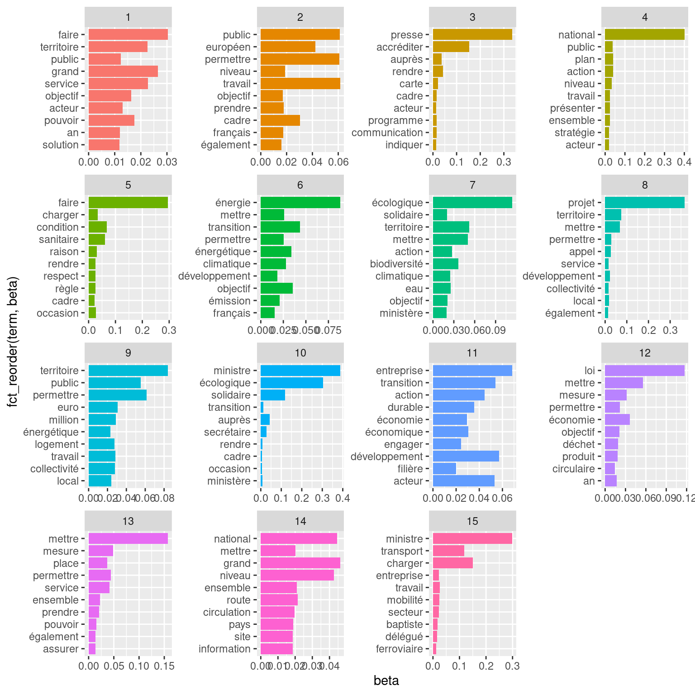
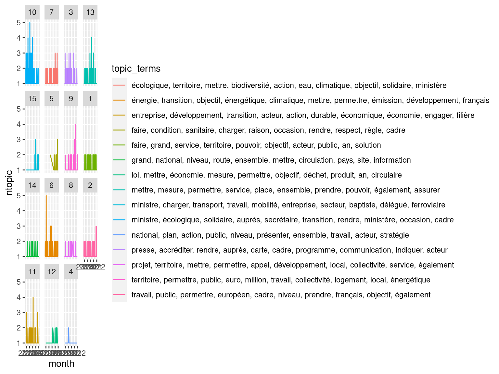

Chapitre 7 Rechercher des thèmes (topic modelling)
freq_lemmes <- read.csv2("data/ministereco_freq_lemmes.csv")
tib_lemmes <- read_csv2("data/ministereco_tib_lemmes.csv") %>%
na.omit()
tib_meta <- read_csv2("data/ministereco_tib_meta.csv")
tib_lemmes <- left_join(tib_lemmes, tib_meta, by=c("doc"))
tib_docs <- read.csv2("data/ministereco_tib_docs.csv")La recherche de thèmes dans un corpus de textes (plus connu en tant que “topic modelling” en anglais) consiste à identifier un certain nombre de thématiques ou sujets sous-jacents, reflétés dans les textes par l’utilisation privilégiée de certains mots. En d’autres termes, les thèmes (ou topics) sont définis et désignés comme des listes de mots.
Il existe plusieurs méthodes et plusieurs algorithmes pour réaliser une recherche de thèmes, mais dans cette partie je me focaliserai sur le Structural Topic Modelling (STM) et sur sa mise en oeuvre à l’aide du package R stm (Roberts, Stewart, and Tingley 2019).
La vignette de ce package, qui détaille la méthode (algorithme) et sa mise en oeuvre sous R peut être consultée ici.
Les explications de Julia Silge, ici et là sur la méthode et sa mise en oeuvre dans le cadre du tidyverse et de tidytext peuvent également servir…
7.1 Principe, notations
On note
- \(K\) le nombre total de thèmes
- \(p\) le nombre total de mots
- \(N\) le nombre total de documents
7.2 scores \(\beta\) (beta)
On note \(\beta_{k,v}\) la probabilité conditionnelle d’un mot \(v\) pour un thème \(k\)
On peut ainsi représenter les scores \(\beta_{k,v}\) comme une matrice (ou un tableau) \(K*p\) (thèmes x mots distincts dans le corpus).
Ainsi, pour faire simple, on peut noter ces coefficients \(\beta_{k,v}\), mais si vous voulez “visualiser” ces coefficients pour comprendre la suite gardez à l’esprit qu’ils se présentent en fait comme suit:
| \(w_1\) | … | \(w_v\) | … | \(w_p\) | |
|---|---|---|---|---|---|
| \(T_1\) | … | … | … | … | … |
| … | … | … | … | … | … |
| \(T_k\) | … | … | \(\beta_{k,v}\) | … | … |
| … | … | … | … | … | … |
| \(T_K\) | … | … | … | … | … |
7.3 FREX
\(FREX\) FRequence and Exclusivité
Le score \(FREX_{k,v}\) d’un mot \(v\) pour un thème \(k\) est:
\[FREX_{k,v}=\left(\frac{w}{F}+\frac{1-w}{E}\right)^{-1}\]
- \(w\) est un poids (choisi entre 0 et 1) qui détermine la part du score \(FREX\) qui correspond à la fréquence (\(F\)) et la part correspondant à l’exclusivité (\(E\))
- \(F\) est le score correspondant à la fréquence, et correspond à la fonction de distribution empirique du mot conditionnellement au thème \(k\)
- \(E\) est le score correspondant à l’exclusivité
7.4 étapes du STM
- on tire au hasard une distribution des thèmes pour chaque document, autour d’une moyenne liée à la valeur des métadonnées pour le document \(X_d\gamma\)
- on calcule pour chaque document les valeurs \(\beta_{k,v}\) (donc on a N matrices à calculer)
- pour chaque mot dans chaque document,
- on l’associe à un thème \(k\) en fonction de la distribution calculée à l’étape 1
- en se basant sur ce thème \(k\) on tire au hasard un mot à l’aide des valeurs \(\beta_{k,v}\)
7.4.1 Mise en forme
Considérons une autre manière de représenter l’information textuelle contenue par la table tib_lemmes. Nous allons compter le nombre d’occurences de chaque lemme (lemma) dans chaque document (doc) et mettre cette information sous forme de matrice \(N*p\) (le nombre de documents * le nombre total de lemmes distincts). Nous allons néanmoins exercer un tri préliminaire en retirant les mots qui sont rares à l’échelle du corpus (ici, on ne garde que ceux pour lesquels la fréquence>20).
La matrice résultante est dite “sparse” car beaucoup de ses cases ont pour valeur 0 (i.e. beaucoup de mots ne se trouvent que dans quelques documents).
La fonction cast_sparse() du package tidytext permet d’effectuer ce reformatage très facilement:
tib_sparse=tib_lemmes %>%
group_by(lemma) %>% # compte pour chaque lemme...
mutate(n=n()) %>% # ...son nombre d'occurrences puis
filter(n>20) %>% # retire ceux représentés moins de 20 fois dans le corpus
ungroup() %>%
cast_sparse(row=doc, column=lemma, value=n)
dim(tib_sparse)## [1] 2868 2415tib_sparse est bien une matrice de N=2868 lignes (le nombre de documents) et de p=2496 colonnes (le nombre de lemmes dont la fréquence dans le corpus est >20)
7.4.2 Calcul du modèle
Chargeons le package stm et faisons tourner l’algorithme STM sur notre table, en demandant une quinzaine de thèmes distincts (cela peut sembler beaucoup mais les thèmes abordés par notre corpus sont de fait assez divers):
library(stm)
set.seed(123)
topic_model<-stm(tib_sparse,K=15, verbose=FALSE)Le calcul du STM se fait de manière itérative. Ici, il a fallu un certain nombre d’itérations (ici une centaine) pour que le modèle converge. Pour donner un ordre de grandeur, il a fallu quelques minutes sur ma machine pour obtenir le résultat.
Les objets stm sont associés à une méthode summary() qui permet de visualiser les thèmes identifiés:
summary(topic_model)## A topic model with 15 topics, 2868 documents and a 2496 word dictionary.## Topic 1 Top Words:
## Highest Prob: faire, grand, service, territoire, pouvoir, objectif, acteur
## FREX: besoin, partager, savoir, vouloir, quotidien, concitoyen, construire
## Lift: mot, sentiment, foi, télécharger, handicap, inventer, monsieur
## Score: faire, territoire, objectif, mobilité, service, besoin, pouvoir
## Topic 2 Top Words:
## Highest Prob: travail, public, permettre, européen, cadre, niveau, prendre
## FREX: européen, décision, membre, donnée, étude, travail, public
## Lift: consulter, substance, directive, règlement, anse, européen, réglementation
## Score: européen, consulter, public, permettre, travail, niveau, objectif
## Topic 3 Top Words:
## Highest Prob: presse, accréditer, rendre, auprès, carte, cadre, programme
## FREX: presse, accréditer, numéro, carte, dossier, prévisionnel, indiquer
## Lift: presse, numéro, dossier, hall, mail, accréditer, carte
## Score: presse, accréditer, dossier, numéro, carte, auprès, communication
## Topic 4 Top Words:
## Highest Prob: national, plan, action, public, niveau, présenter, ensemble
## FREX: national, stratégie, député, plan, rapport, débat, concertation
## Lift: député, national, loup, perturbateur, endocrinien, capture, stratégie
## Score: national, député, niveau, action, public, plan, stratégie
## Topic 5 Top Words:
## Highest Prob: faire, condition, sanitaire, charger, raison, occasion, rendre
## FREX: faire, sanitaire, respect, règle, geste, raison, condition
## Lift: strict, distanciation, intégralité, physique, geste, barrière, masque
## Score: faire, sanitaire, distanciation, condition, raison, barrière, geste
## Topic 6 Top Words:
## Highest Prob: énergie, transition, objectif, énergétique, climatique, mettre, permettre
## FREX: émission, énergie, carbone, gaz, climat, énergétique, électricité
## Lift: neutralité, to, carbone, gaz, émission, fossile, électricité
## Score: énergie, énergétique, transition, émission, climatique, carbone, objectif
## Topic 7 Top Words:
## Highest Prob: écologique, territoire, mettre, biodiversité, action, eau, climatique
## FREX: biodiversité, eau, protection, nature, préservation, protéger, mer
## Lift: oiseau, sécheresse, faux, récif, corallien, trait, biodiversité
## Score: écologique, biodiversité, solidaire, climatique, territoire, eau, protection
## Topic 8 Top Words:
## Highest Prob: projet, territoire, mettre, permettre, appel, développement, local
## FREX: projet, appel, lauréat, territoire, candidature, actif, lancer
## Lift: lauréat, actif, projet, sélectionner, jury, candidature, appel
## Score: projet, actif, territoire, appel, mettre, développement, lauréat
## Topic 9 Top Words:
## Highest Prob: territoire, permettre, public, euro, million, travail, collectivité
## FREX: euro, logement, rénovation, million, bâtiment, aider, territorial
## Lift: cérémonie, rénovation, logement, pouce, bailleur, précarité, bénéficiaire
## Score: logement, rénovation, territoire, énergétique, euro, million, permettre
## Topic 10 Top Words:
## Highest Prob: ministre, écologique, solidaire, auprès, secrétaire, transition, rendre
## FREX: écologique, solidaire, ministre, secrétaire, auprès, brun, président
## Lift: fédéral, solidaire, écologique, ministre, secrétaire, brun, auprès
## Score: ministre, écologique, solidaire, auprès, secrétaire, transition, brun
## Topic 11 Top Words:
## Highest Prob: entreprise, développement, transition, acteur, action, durable, économique
## FREX: durable, entreprise, économique, développement, innovation, filière, transition
## Lift: instrument, investisseur, synergie, durable, alliance, paix, promotion
## Score: entreprise, transition, développement, économie, action, durable, acteur
## Topic 12 Top Words:
## Highest Prob: loi, mettre, économie, mesure, permettre, objectif, déchet
## FREX: loi, plastique, déchet, produit, circulaire, gaspillage, recyclage
## Lift: poubelle, gaspillage, synthèse, végétarien, loi, recyclable, plastique
## Score: loi, économie, circulaire, plastique, déchet, mesure, produit
## Topic 13 Top Words:
## Highest Prob: mettre, mesure, permettre, service, place, ensemble, prendre
## FREX: situation, mesure, crise, assurer, place, mettre, continuer
## Lift: allocataire, cabotage, remboursement, partiel, expulsion, impayé, paiement
## Score: mettre, mesure, permettre, service, place, sanitaire, prendre
## Topic 14 Top Words:
## Highest Prob: grand, national, niveau, route, ensemble, mettre, circulation
## FREX: circulation, autoroute, classer, départ, heure, dimanche, samedi
## Lift: décrue, orange, classer, autoroute, bouchon, min, regagner
## Score: autoroute, national, circulation, niveau, classer, routier, éviter
## Topic 15 Top Words:
## Highest Prob: ministre, charger, transport, travail, mobilité, entreprise, secteur
## FREX: transport, baptiste, charger, mobilité, ferroviaire, jean, délégué
## Lift: cheminot, baptiste, automatiser, détachement, métro, jean, transport
## Score: ministre, transport, charger, baptiste, mobilité, délégué, ferroviaireChacun des thèmes est identifié par des termes privilégiés (selon plusieurs métriques différentes: Highest probability i.e. \(beta\), FREX, lift, score)…
termes_thematiques=tidy(topic_model, matrix="beta") %>%
group_by(topic) %>%
slice_max(beta,n=10) %>%
arrange(topic,desc(beta)) %>%
mutate(rank=row_number()) %>%
mutate(topic=as.factor(topic))
termes_thematiques## # A tibble: 150 × 4
## # Groups: topic [15]
## topic term beta rank
## <fct> <chr> <dbl> <int>
## 1 1 faire 0.0304 1
## 2 1 grand 0.0265 2
## 3 1 service 0.0227 3
## 4 1 territoire 0.0225 4
## 5 1 pouvoir 0.0175 5
## 6 1 objectif 0.0163 6
## 7 1 acteur 0.0130 7
## 8 1 public 0.0124 8
## 9 1 an 0.0119 9
## 10 1 solution 0.0118 10
## # … with 140 more rowsggplot(termes_thematiques, aes(x=beta,y=fct_reorder(term,beta), fill=topic))+
geom_bar(stat="identity")+
facet_wrap(facets=vars(topic), scales="free")+
theme(legend.position="none")
7.5 Assignation d’un thème aux documents
Si la matrice “beta” correspond à la probabilité d’un terme dans un thème, on s’intéresse également à la probabilité qu’un document s’inscrive dans un thème. Cette probabilité est donnée par la matrice gamma:
tib_gamma <- tidy(topic_model, matrix = "gamma")
head(tib_gamma)## # A tibble: 6 × 3
## document topic gamma
## <int> <int> <dbl>
## 1 1 1 0.00000381
## 2 2 1 0.0000173
## 3 3 1 0.0000476
## 4 4 1 0.0108
## 5 5 1 0.0000134
## 6 6 1 0.0786Considérons par exemple le sujet 2 qui correspond vraisemblablement à une thématique autour de la mobilité d’après les termes affichés par summary()
tib_gamma %>%
group_by(topic) %>%
slice_max(n=3,gamma) %>%
filter(topic==2)## # A tibble: 3 × 3
## # Groups: topic [1]
## document topic gamma
## <int> <int> <dbl>
## 1 2211 2 1.00
## 2 2822 2 0.889
## 3 2500 2 0.834Parmi les documents qui s’inscrivent le mieux dans cette thématique, on a le document 2832. Vérifions le contenu textuel de ce document:
tib_docs %>%
filter(doc=="doc2832") %>%
pull(texte)## [1] "A la suite de la remise le 27 juillet dernier du rapport de Michel Delebarre sur le désenclavement du Limousin et des territoires limitrophes, Elisabeth Borne, Ministre chargée des Transports, a reçu jeudi 28 septembre les élus locaux concernés, comme elle s’y était engagée. Ce rapport, qui fait suite à l’annulation le 15 avril 2016 de la déclaration d’utilité publique sur le projet de ligne à grande vitesse Poitiers-Limoges, préconise des solutions alternatives pour améliorer l’accessibilité de ces territoires. Il préconise notamment à court terme la poursuite de la modernisation de la ligne ferroviaire Paris-Orléans-Limoges-Toulouse (POLT) et à moyen terme le raccordement de Limoges à la ligne à grande vitesse Tours – Bordeaux (LGV SEA) grâce à la mise à niveau de la ligne existante Poitiers – Limoges. Cette réunion a permis d’échanger collectivement sur ces conclusions, en présence des élus de l'ensemble des territoires concernés, des services de l’Etat (préfets, administration) et des représentants de la SNCF. Elisabeth Borne a réaffirmé sa détermination à améliorer la qualité de la desserte et de l’accessibilité de cette région. A ce titre, elle a confirmé les travaux de modernisation de la ligne POLT, avec un programme de plus de 1 Md€ engagé sur 2015-2025. Elle a demandé à SNCF Réseau de présenter un programme de modernisation de la ligne existante entre Poitiers et Limoges ainsi que les gains qui en résulteraient en matière d’accessibilité et de temps de parcours. Elle s’est engagée à étudier les modalités d’une desserte aérienne adaptée aux besoins des territoires, et notamment de Limoges. Un point sera fait au printemps 2018 sur l’ensemble de ces sujets, et notamment sur le schéma directeur de la ligne POLT en cours de préparation, ainsi que sur le programme qui pourrait être mis en œuvre pour la mise à niveau de la ligne existante afin d’accéder à la LGV SEA via Poitiers."Pour cet exemple, c’est plutôt convaincant!
Attribuons maintenant une thématique à chacun des documents en se basant sur la probabilité gamma:
tib_gamma_max=tib_gamma %>%
group_by(document) %>%
slice_max(n=1,gamma) %>%
mutate(doc=paste0("doc",document)) %>%
select(-document) %>%
mutate(topic=as.factor(topic)) %>%
ungroup()
tib_docs_thematiques =tib_docs %>%
left_join(tib_gamma_max, by="doc") %>%
mutate(month=lubridate::ymd(date))
head(tib_docs_thematiques)## lien
## 1 https://www.ecologie.gouv.fr//pfue-reunions-informelles-des-ministres-lenvironnement-et-lenergie-amiens-du-20-au-22-janvier-brief
## 2 https://www.ecologie.gouv.fr//deplacement-berangere-abba-dans-vosges-lundi-17-janvier-2022
## 3 https://www.ecologie.gouv.fr//lutte-contre-precarite-des-femmes-elisabeth-moreno-et-emmanuelle-wargon-se-rendront-cite-des-dames
## 4 https://www.ecologie.gouv.fr//gouvernement-engage-des-mesures-exceptionnelles-proteger-pouvoir-dachat-des-francais-et-preserver
## 5 https://www.ecologie.gouv.fr//deplacement-jean-baptiste-djebbari-dans-pays-baltes-lettonie-lituanie-et-estonie-lundi-10-mardi-11
## 6 https://www.ecologie.gouv.fr//barbara-pompili-participera-ceremonie-dinauguration-grenoble-capitale-verte-samedi-15-janvier
## titre
## 1 PFUE - Réunions informelles des ministres de l'Environnement et de l'Energie à Amiens du 20 au 22 janvier : brief presse le mardi 18 janvier
## 2 Déplacement de Bérangère Abba dans les Vosges lundi 17 janvier 2022
## 3 Lutte contre la précarité des femmes : Élisabeth Moreno et Emmanuelle Wargon se rendront à la Cité des dames (Paris-13) ce vendredi 14 janvier 2022
## 4 Le Gouvernement engage des mesures exceptionnelles pour protéger le pouvoir d’achat des français et préserver la compétitivité de l’approvisionnement électrique des entreprises face à la forte hausse des prix de l’énergie
## 5 Déplacement de Jean-Baptiste Djebbari dans les pays baltes (Lettonie, Lituanie et Estonie), les lundi 10, mardi 11 et mercredi 12 janvier 2022
## 6 Barbara Pompili participera à la cérémonie d'inauguration de Grenoble capitale verte le samedi 15 janvier
## date
## 1 2022-01-14
## 2 2022-01-14
## 3 2022-01-14
## 4 2022-01-13
## 5 2022-01-13
## 6 2022-01-13
## texte
## 1 En amont des réunions informelles des ministres de l’Environnement et de l’Energie qui se tiendront du 20 au 22 janvier à Amiens dans le cadre de la Présidence française du Conseil de l’Union européenne, un briefing presse est organisé le mardi 18 janvier à 15h30 au ministère de la Transition écologique. Merci de vous accréditer jusqu’à 12h00 le 18/01/2022 à l’adresse suivante : secretariat.communication@ecologie.gouv.fr Le brief se fera en présentiel au ministère de la Transition écologique, 244 boulevard Saint Germain - 75007 Paris. Un pass sanitaire sera demandé. Il est également possible de suivre le brief à distance : un lien de visioconférence vous sera adressé.
## 2 Bérangère Abba, Secrétaire d’Etat chargée de la Biodiversité, remettra le Prix « Transition écologique » de la 3e édition des Prix «Choose France 2021» à Norske Skog, entreprise norvégienne qui a investi 250 M€ dans sa papeterie, à Golbey, en région Grand Est, pour la conversion d'une de ses lignes de production de papier journal à du carton d’emballage 100% recyclé. En 2021, Business France avait choisi de mettre à l’honneur cinq projets contribuant de manière significative au plan «France Relance» et de récompenser ainsi la contribution des investisseurs internationaux à la relance française. Après un échange en préfecture sur le thème des espèces emblématiques et des grands prédateurs, Bérangère Abba se rendra à la présentation du plan d’action et de restauration de cours d’eau de la communauté d'agglomération de Saint-Dié-des-Vosges à la Chapelle-devant-Bruyères. Ce plan vise notamment à sauver l’espèce de la mulette perlière, espèce classée en danger par l’UICN, qui est en voie de disparition dans cette zone. La communauté d'agglomération de Saint-Dié-des-Vosges et l’Etat via l’Agence de l’eau Rhin-Meuse se sont fortement mobilisés pour restaurer le bassin versant du Neuné, affluent de la Vologne. 11H00-12H00 Visite de l’entreprise NORSKE SKOG et remise du Prix « Choose France 2021 » décerné par Business FranceToute presse accréditée – point presse à l’issue de la visiteGolbey 12H15-13H30 Échange sur le thème de la protection des espèces emblématiques et des grands prédateurs dans le département (notamment Grand Tétras, Lynx, Loups) Hors presse 14H00-14H45 Présentation du plan de restauration de cours d’eau par la communauté d'agglomération de Saint-Dié-des-Vosges et par l’Agence de l’eau Rhin-Meuse et du plan de conservation de la mulette perlière par la Société d’histoire naturelle de ColmarToute presse accréditée – point presse à l’issue de la présentationLa Chapelle-devant-Bruyères 14H50-15H10 Visite sur site – ruisseau Le Neuné Toute presse accréditée Chemin du Moulin (accès par la route devant le cours) – Les Poulières Merci de vous accréditer auprès de la préfecture des Vosges jusqu’à 12h00 le 16/01/2022 à l’adresse suivante : pref-communication@vosges.gouv.fr En raison des conditions sanitaires exceptionnelles, cet événement se fera dans le plus strict respect des règles de distanciation physique et des gestes barrières.
## 3 Élisabeth MORENO, ministre déléguée auprès du Premier ministre chargée de l’Égalité entre les femmes et les hommes, de la Diversité et de l’Égalité des chances, et Emmanuelle WARGON, ministre déléguée auprès de la ministre de la Transition écologique, chargée du Logement, visiteront la Cité des Dames (39 rue du Chevaleret – Paris 13ème) le vendredi 14 janvier 2022 de 16h30 à 17h30. Mme Élisabeth MORENO, ministre déléguée auprès du Premier ministre, chargée de l’Égalité entre les femmes et les hommes, de la Diversité et de l’Égalité des Chances et Mme Emmanuelle WARGON, ministre déléguée auprès de la ministre de la Transition écologique, chargée du Logement se rendront à la Cité des dames dans le 13ème arrondissement de Paris. Il s’agit d’un centre d’hébergement qui accueille des femmes sans domicile fixe. Ce déplacement s’inscrit dans les actions du Ministère du Logement pour accueillir, héberger, accompagner les femmes qui ont connu des parcours de rue, et dans une séquence, plus large, dédiée à la lutte contre la précarité des femmes. Au préalable et dans ce même cadre, Mme MORENO s’est rendue au CIDFF 91 ce jeudi 13 janvier pour annoncer des montants financiers supplémentaires pour l’insertion des femmes éloignées de l’emploi et le jeudi après-midi au Salon Joséphine, qui accompagne également les femmes en situation de précarité à retrouver confiance en elles. 16h30 Arrivée de Mme Elisabeth MORENO et Mme Emmanuelle WARGON et accueil républicain 16h35 Visite des locaux 16h45 Echange avec les bénéficiaires et les équipes 17h20 Micro tenduToute presse accréditée Merci de vous accréditer à l’adresse suivante : presse-efh@pm.gouv.fr En raison du contexte sanitaire, port du masque obligatoire
## 4 Face à la hausse sans précédent des prix de l’électricité ces dernières semaines, dans un contexte de tensions sur la disponibilité des installations de production françaises et sur l’approvisionnement gazier de l’Europe, le Gouvernement a décidé de prendre des mesures exceptionnelles pour préserver le pouvoir d’achat des Français et la compétitivité de l’approvisionnement des entreprises. En complément des mesures déjà engagées, le Gouvernement a décidé d’augmenter à titre exceptionnel de 20 TWh le volume d’ARENH qui sera livré en 2022, afin que l’ensemble des consommateurs bénéficie de la compétitivité du parc électronucléaire français. Ces volumes seront accessibles à tous les consommateurs, particuliers, collectivités comme professionnels, via leur fournisseur selon des modalités qui seront précisées très prochainement. Les fournisseurs répercuteront intégralement l’avantage retiré au bénéfice des consommateurs. Ce point fera l’objet d’une surveillance étroite, en lien avec la Commission de régulation de l’énergie. Dans le même temps, afin d’assurer une juste rémunération de l’outil de production qui contribue à la protection de l’ensemble des consommateurs français face à cette hausse de prix, le prix de ces volumes additionnels d’ARENH sera révisé à 46,2€/MWh. Les autorités européennes ont été informées de cette décision qui s’inscrit dans le cadre des mesures exceptionnelles d’adaptation à la situation de crise des prix de l’énergie qui touche l’ensemble des pays européens. Ce relèvement du plafond de l’ARENH s’ajoute à la baisse pour un an de la taxe portant sur l’électricité (TICFE) à son niveau minimum prévu par le droit européen à compter du 1er février prochain. Cette baisse représente un coût budgétaire pour l’Etat de 8 milliards d’euros. Combinée au relèvement du plafond de l’ARENH, elle apportera un soutien massif au pouvoir d’achat de tous les consommateurs. Ces mesures permettront de sécuriser la mise en œuvre du bouclier tarifaire pour l’électricité annoncé par le Premier ministre et inscrite dans la loi de finances pour 2022. En effet, comme il s’y était engagé, le Gouvernement bloquera la hausse des tarifs réglementés de vente de l’électricité à 4% TTC au 1er février pour les consommateurs résidentiels alors que, sans intervention de sa part, la hausse aurait atteint 35%. Compte tenu de la situation exceptionnelle, le Gouvernement a également décidé d’étendre le bouclier tarifaire en limitant la hausse des tarifs réglementés de vente d’électricité à 4% pour les petits consommateurs professionnels qui en bénéficient en métropole, ainsi que pour l’ensemble des consommateurs professionnels des territoires ultramarins et de la Corse (zones non interconnectées) qui bénéficient de ces tarifs. Ces mesures viennent en complément de l’action résolue du Gouvernement depuis plusieurs mois pour atténuer les conséquences de la hausse des prix des énergies pour l’ensemble des consommateurs, et notamment les plus modestes, qui s’est traduite par des mesures d’accompagnement fortes : Le Gouvernement continuera à suivre avec la plus grande attention l’évolution de la situation des marchés de l’énergie au cours des prochaines semaines et veillera à ce que les mesures prises aujourd’hui soient pleinement répercutées par les fournisseurs à leurs clients. Nous restons mobilisés, comme nous le sommes depuis le début de la crise, pour protéger tous les consommateurs face à la hausse exceptionnelle des prix de l’énergie et sécuriser notre tissu économique et industriel. Cette situation nous rappelle l’importance d’investir dans les économies d’énergie, comme nous le faisons notamment grâce 2 milliards d’euros prévus en 2022 pour les aides à la rénovation énergétique des logements. Dans le même temps, nous préparons l’avenir et sommes engagés pour faire évoluer au niveau européen les marchés de l’énergie vers un fonctionnement qui soutienne une transition énergétique juste. Ces mesures complémentaires et massives traduisent l’engagement total de ce Gouvernement en faveur du pouvoir d’achat des ménages et de la compétitivité des entreprises. Elles sont rendues possibles par la compétitivité du parc nucléaire français, qui permet de bénéficier d’une énergie peu chère et totalement décarbonée.
## 5 Jean-Baptiste Djebbari, ministre délégué chargé des Transports, s’est rendu dans les Pays Baltes (Lettonie, Lituanie et Estonie), les lundi 10, mardi 11 et mercredi 12 janvier 2022. 10h00 Visite du chantier de la nouvelle gare ferroviaire de Riga en présence des dirigeants d’EDzL (société gestionnaire des infrastructures ferroviaires lettones) et de Rail Baltica. 11h00 Entretien avec M. Talis Linkaits, ministre des transports de la République de Lettonie 12h20 Interview pour la télévision nationale lettone Latvijas Sabiedriskie Mediji : Plus de détails ici 13h00 Déjeuner en présence de représentants de Systra, Egis, EDzL et Rail Baltica 15h00 Entretien avec M. Viesturs Zeps, président du conseil d’administration du port libre de Riga 10h00 Visite de la filiale du groupe Vinci Eurovia Lietuva 11h00 Visite de la filiale lituanienne de l’entreprise DPD, groupe La Poste 12h30 Déjeuner de travail avec M. Marius Skuodis, ministre des Transports et des Communications 15h00 Entretien avec Mme Daiva Garbaliauskaitė, vice-ministre de l’Energie, en charge de l’Infrastructure des bornes de recharge privées et de la Stratégie de l’hydrogène 16h00 Entretien avec M. Gediminas Žiemelis, président-directeur général d’Avia Solutions Group suivi de la visite du nouveau centre d’affaires « Aerocity » 8h30 Petit-déjeuner à la résidence avec M. Indrek Õnnik, Directeur des Affaires globales et Mme Yana Laurand, Conseillère au département des affaires européennes au Ministère des Affaires économiques 9h45 Visite de l’entreprise de transport autonome Auvetech 10h00 Entretien avec M. Andres Sütt, ministre de l’Entrepreneuriat et des Technologies de l’Information 11h00 Entretien avec M. Taavi Aas, ministre des Affaires économiques en charge des Transports 12h15 Visite de la start up spécialisée en production de batteries Skeleton
## 6 Depuis plusieurs années, en partenariat avec l’Etat, Grenoble et les collectivités réunies au sein de la métropole ont mobilisé les différents leviers à leur disposition et ont su porter des politiques publiques écologiques et innovantes. Cette exemplarité a conduit l’Union européenne à faire de Grenoble sa Capitale Verte 2022. En octobre dernier, Barbara Pompili avait annoncé un financement de 4 millions d’euros pour accompagner le portage du label sur l’ensemble de l’année 2022. Alors que la Présidence française du Conseil de l’Union européenne a débuté il y a deux semaines, cet évènement rappelle le rôle moteur de la France en matière de transition écologique au sein de l’Union et distingue l’une de ses villes. M. Virginijus Sinkevičius, Commissaire européen à l’Environnement, à la Pêche et aux Océans, participera également à cette cérémonie. 16h55 Cérémonie officielle Musée d’histoire naturelle de Grenoble – 1 rue Dolomieu, 38000 Grenoble (accès par l’angle rue Haxo – rue Dolomieu) Allocutions de : Toute presse accréditée - La cérémonie pourra également être suivie en ligne (https://greengrenoble2022.eu/112-direct-ceremonie-15janv.htm) Merci de vous accréditer avant le 14 janvier à 18h00 à l’adresse suivante : pref-communication@isere.gouv.fr En raison des conditions sanitaires, cet événement se fera dans le plus strict respect des règles de distanciation physique et des gestes barrières. Le port du masque est obligatoire.
## doc month ministre document topic gamma
## 1 doc1 2022-01-14 Barbara Pompili 1 10 0.3803329
## 2 doc2 2022-01-14 Barbara Pompili 2 7 0.3298059
## 3 doc3 2022-01-14 Barbara Pompili 3 3 0.2679520
## 4 doc4 2022-01-13 Barbara Pompili 4 13 0.2865068
## 5 doc5 2022-01-13 Barbara Pompili 5 15 0.6730209
## 6 doc6 2022-01-13 Barbara Pompili 6 5 0.2118066Pour analyser l’information relative aux thématiques à l’échelle du document, il peut également être utile de “ré-étiqueter” les thèmes non pas en topic 1, 2, 3, etc. mais en utilisant les termes qui leurs sont spécifiques:
thematiques=termes_thematiques %>%
nest()%>%
summarise(topic_terms=map(data, ~paste(.$term,collapse=", "))) %>%
unnest()
thematiques## # A tibble: 15 × 2
## topic topic_terms
## <fct> <chr>
## 1 1 faire, grand, service, territoire, pouvoir, objectif, acteur, public, …
## 2 2 travail, public, permettre, européen, cadre, niveau, prendre, français…
## 3 3 presse, accréditer, rendre, auprès, carte, cadre, programme, communica…
## 4 4 national, plan, action, public, niveau, présenter, ensemble, travail, …
## 5 5 faire, condition, sanitaire, charger, raison, occasion, rendre, respec…
## 6 6 énergie, transition, objectif, énergétique, climatique, mettre, permet…
## 7 7 écologique, territoire, mettre, biodiversité, action, eau, climatique,…
## 8 8 projet, territoire, mettre, permettre, appel, développement, local, co…
## 9 9 territoire, permettre, public, euro, million, travail, collectivité, l…
## 10 10 ministre, écologique, solidaire, auprès, secrétaire, transition, rendr…
## 11 11 entreprise, développement, transition, acteur, action, durable, économ…
## 12 12 loi, mettre, économie, mesure, permettre, objectif, déchet, produit, a…
## 13 13 mettre, mesure, permettre, service, place, ensemble, prendre, pouvoir,…
## 14 14 grand, national, niveau, route, ensemble, mettre, circulation, pays, s…
## 15 15 ministre, charger, transport, travail, mobilité, entreprise, secteur, …truc=tib_docs_thematiques %>%
left_join(thematiques,by="topic") %>%
group_by(month,topic,topic_terms) %>%
summarise(ntopic=n()) %>%
ungroup() %>%
na.omit()
ggplot(truc,
aes(x=month,y=ntopic,col=topic_terms))+
geom_path()+
facet_wrap(facets=vars(topic))